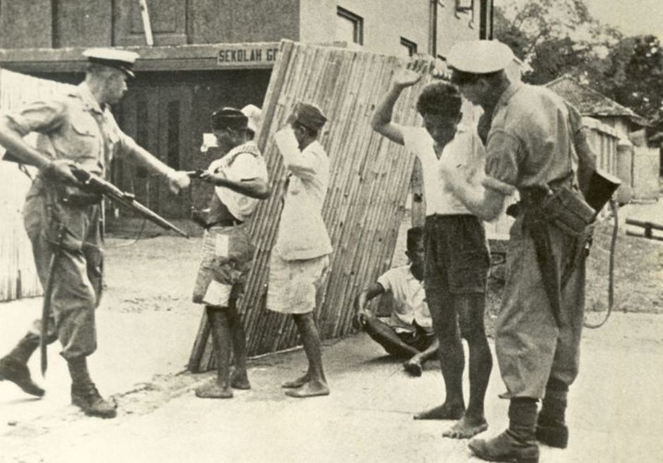

BelajarYuk.com
Sejarah Perjuangan Bangsa Indonesia.
Mari memperluas wawasan anda tentang sejarah kemerdekaan Indonesia bersama kami.
Tahun 1500-an
Masa pemerintahan kerajaan
Tahun 1800-an
Masa Penjajahan Belanda
Tahun 1900-an
Masa Penjajahan Jepang
Tahun 1945
Rengasdengklok & Proklamasi
Kenapa Bangsa Indonesia bisa
mencapai kemerdekaannya ya?
Tahukah kalian, di balik hari kemerdekaan Indonesia yang selalu kita rayakan setiap tanggal 17 Agustus, ada para pahlawan yang rela berjuang mengorbankan nyawa mereka demi Bangsa Indonesia lho. Yuk simak lebih lanjut!
Learn MorePara Pahlawan
Proklamasi
Dibawah ini merupakan tokoh yang berperan penting dalam proklamasi kemerdekaan Indonesia.

Ir Soekarno,
Pembaca Teks Proklamasi

Mohammad Hatta,
Menandatangi Teks Proklamasi

Ahmad Soebardjo,
Penyusun Teks Proklamasi
Garis Waktu
Sejarah Indonesia
Berikut adalah sedikit cuplikan sejarah perjuangan Bangsa Indonesia secara garis besar.
Tahun 1511
Bangsa Portugis menaklukkan kota Melaka
Sebelum dijajah Belanda, Indonesia dijajah oleh bangsa Portugis. Wilayah Nusantara yang pertama dikuasai Portugis adalah Kesultanan Malaka. Pada abad ke-15...
Know Details 

Tahun 1599
Dua kapal besar Belanda tiba di Aceh
Pada 1599, dua buah kapal pimpinan de Houtman yang bernama de Leeuw dan de Leeuwin berlabuh di ibukota Kerajaan Aceh. Pada awalnya kedua kapal ini...
Know Details

Tahun 1605
VOC menyerang pertahanan Portugis di Ambon
Setelah bercokol selama kurang lebih seabad, pada 25 Februari 1605, Portugis dipaksa hengkang dari Maluku. Masa kuasa Portugis di kepulauan rempah-rempah itu...
Know Details